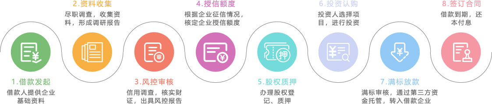

什么是商企贷？
商企贷专门针对小微企业法人或者企业股东，因资金流通需求，通过股东会决议将股权、票据、应收货款等抵质押并办理登记手续，或者以自有房产，车辆等资产作为还款付息的保障，提供全面准确的线上信息并保证安全，为小微企业解决资金周转需求。
【项目优质】
PROJECT QUALITY
【保障完善】
GUARANTEE PERFECTION
【回报率高】
HIGH RETURNS
【质押担保】
PLEDGE GUARANTEE
【风控把关】
WIND CONTROL GATEWAY
商企贷办理流程
常见问题
1、什么是商企贷？
商企贷是指小微企业法人用股权、票据或者应收货款做质押贷款，来解决企业资金周转的需求。
2、商企贷的风险如何把控？
借款前：九趣网风控部会审核企业的资质，包括但不限于营业执照、企业代码证、纳税登记证、三年会计（审计）事务所验证的财务报表等......全方面确认企业贷款资质，并让企业做出相关资产的质押。
借款中：九趣网催收部会严密监查企业的财政，确保还款金额按时、按量的还与出借人。
保障措施：若在还款时九趣网发现企业有拖欠倾向，会启动保障金计划，保障出借人的资金安全。
3、商企贷适合什么样的人投资？
资金量大，想投资长期标的比较稳健的出借人进行投资。
4、商企贷的计息方式和到账时间？
商企贷的计息方式为按月还息到期还本。严格按照日期，按时返还本金和利息到出借人账户。